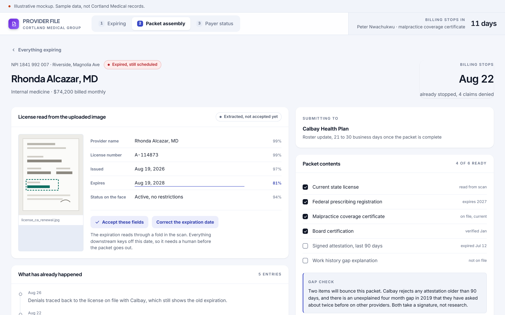

We improve business processes.
Whatever your team runs by hand, we can build the software that runs it instead. The six below are the ones we are asked for most often. Every build is shaped around your process and connects to the systems you already use.
Scheduling and dispatch
Assign the right person to the right job without the whiteboard. Skills, certifications, availability and customer rules are checked automatically, and changes reach the field in one step. The board stops living in one person's head and starts living somewhere the whole team can read it.
What changes
- The schedule survives a sick day because the rules live in the software.
- Certifications and customer preferences are checked before an assignment is made.
- A change reaches the technician and the customer in the same step.
Billing, invoicing and reconciliation
Invoices go out when the work is done, not when someone finds time. Payments are matched to invoices automatically, and the paperwork holding up payment is flagged before it ages. Most of what sits past ninety days is waiting on a document somebody inside the building still has to produce.
What changes
- Work that is finished gets billed the same week.
- Payments land against the right invoice without a manual hunt.
- The document holding up a payment is named while it still matters.
Compliance and document tracking
Every certificate, license and required document is tracked against its expiration date. Reminders go out before anything lapses, and the record is ready when an auditor or lender asks. One expired certificate can hold a payment for every other party on the job.
What changes
- Renewals are chased before the expiration date, not after.
- An auditor or lender request is answered from one screen.
- Nobody works on site against a lapsed certificate.
Inventory and purchasing
Stock levels, reorder points and purchase approvals live in one place. Shortages surface before an order stalls, and every purchase goes to the right approver. The gap between what the system says is on the shelf and what is actually there is where the margin goes.
What changes
- Shortages surface before an order is promised to a customer.
- Reorder quantities reflect what the shelf actually holds.
- Every purchase reaches the person who is allowed to approve it.
Credentialing and records management
Staff, provider and vendor files stay complete and current, with renewals tracked automatically. A lapsed credential never stops billing or holds up a job. Nothing announces itself when a credential expires, so the software has to.
What changes
- Billing never stops because of a date on a form.
- Packets go out complete the first time.
- Every file stays current without anyone chasing paper.
AI data analysis and process insights
We analyze your own transaction, schedule and billing data to find where work stalls, where errors repeat and where money leaks. You get a clear list of fixes, ranked by what each one is worth. Every finding shows the records it came from, so you can check it.
What changes
- You see where the work actually stalls, with the evidence attached.
- Repeat errors get named instead of absorbed.
- Each fix is ranked by what it is worth.
One screen, the whole process.
The credentialing concept shows all of it at once: the expiration horizon, the grid that holds four sites and five plans, the document read, and the check that names what will bounce.
